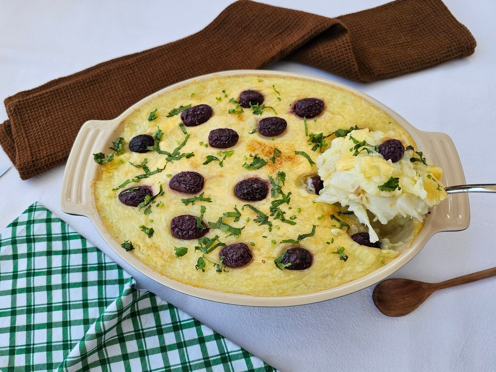

Os Pratos Principais

Bacalhau com Natas
Clássico prato português de bacalhau gratinado com molho bechamel e natas.
60 min
6 porções
Frango Assado com Batatas
Frango dourado e suculento com batatas assadas e ervas aromáticas.
90 min
4 porções
Feijoada à Portuguesa
Rica feijoada com diversos tipos de carnes e enchidos portugueses.
120 min
8 porções

Bacalhau à Zé do Pipo
Um prato tradicional português, feito com bacalhau, purê de batata e maionese.
90 min
6 porções